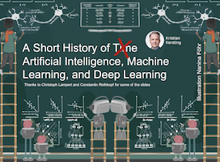
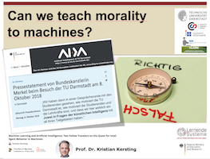
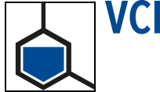
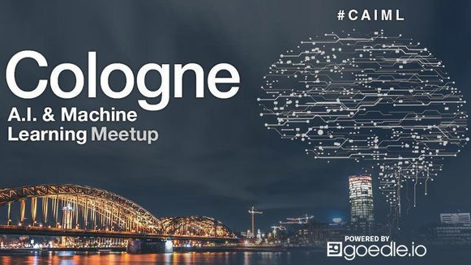
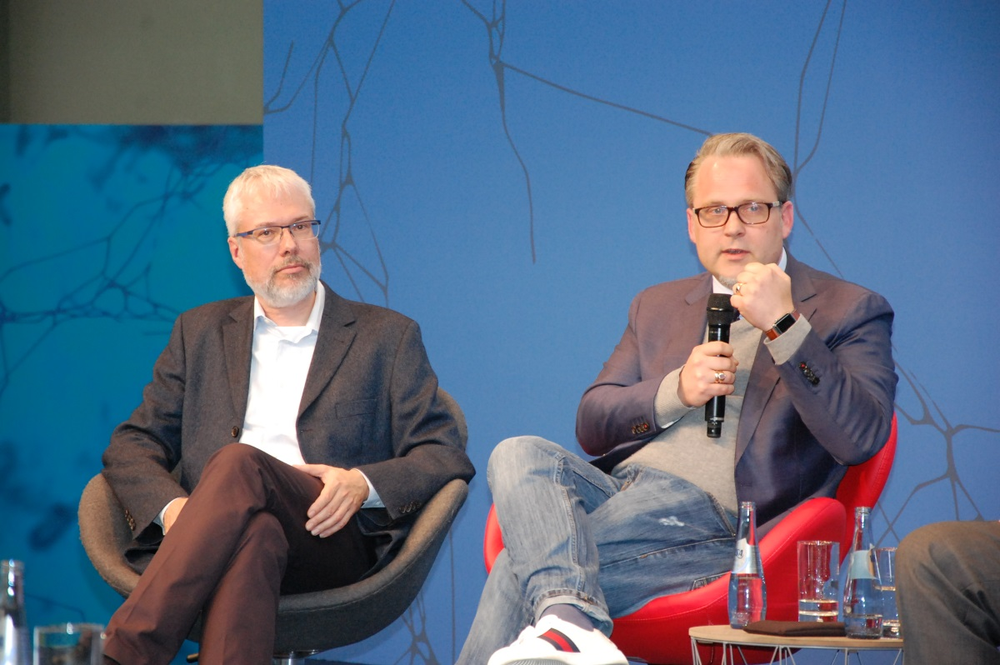
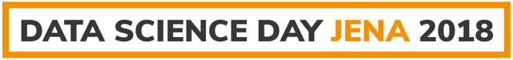

+49-6151-16-24411
+49-6151-16-24411  kersting (at) cs (dot) tu-darmstadt (dot) de
kersting (at) cs (dot) tu-darmstadt (dot) de
Follow @kerstingAIML


Meetings by appointment, general consultation: thursdays, 13:30-14:30 o'clock
In case of important appointments and requests, please make sure to contact my administrative assistant Ira Tesar.
Mission. My team and I in the Artificial Intelligence and Machine Learning (AIML) group would like to make computers learn so much about the world, so rapidly and flexibly, as humans. This poses many deep and fascinating scientific problems: How can computers learn with less help from us and data? How can computers reason about and learn with complex data such as graphs and uncertain databases? How can pre-existing knowledge be exploited? How can computers decide autonomously which representation is best for the data at hand? Can learned results be physically plausible or be made understandable by us? How can computers learn together with us in the loop? To this end, my team and I develop novel machine learning (ML) and artificial intelligence (AI) methods, i.e., novel computational methods that contain and combine for example search, logical and probabilistic techniques as well as (deep) (un)supervised and reinforcement learning methods.
Bio. Kristian Kersting is a Full Professor (W3) at the Computer Science Department of the TU Darmstadt University, Germany. He heads the Artificial Intelligence and Machine Learning (AIML) lab and is also a Deputy Director of the Centre for Cognitive Science. After receiving his Ph.D. from the University of Freiburg in 2006, he was with the MIT, Fraunhofer IAIS, the University of Bonn, and the TU Dortmund University. His main research interests are statistical relational artificial intelligence (AI), probabilistic programming, and deep probabilistic learning. Kristian has published over 170 peer-reviewed technical papers and co-authored a book on statistical relational AI.
Kristian is a Fellow of the European Association for Artificial Intelligence (EurAI), the key European association for AI researchers,
a Fellow of the European Laboratory for Learning and Intelligent Systems (ELLIS), the key European society for machine learning, and a key supporter of the Confederation of Laboratories for Artificial Intelligence in Europe (CLAIRE), the key European research network for Artifial Intelligence.
He was named a Top 100 Influential Scholar 2018 for Artificial Intelligence by AMiner and
received the Inaugural German AI Award (Deutscher KI-Preis) 2019, accompanied by a prize of EURO100.000, as well as several best paper (TPM 2019, AIIDE 2015, ECML 2006), outstanding reviewer awards (ECCV 2016, AAAI 2013),
a Fraunhofer Attract research grant with a budget of 2.5 Million Euro over 5 years (2008-2013), and the
EurAI (formerly ECCAI)
Timeline.
2019 - now:
Full Professor for Artificial Intelligence and Machine Learning at the CS Department of the TU Darmstadt, Germany
2017 - 2019:
Full Professor for Machine Learning at the CS Department of the TU Darmstadt, Germany
2013 - 2017:
Associate Professor for Data Mining at the CS Department of the TU Dortmund, Germany
2012 - 2013:
Juniorprofessor for Spatio-Temporal Pattern in Agriculture at the Faculty of Agriculture of the University of Bonn, Germany
2008 - 2012:
Research group leader at the Fraunhofer IAIS, Germany, supported by a "Fraunhofer Attract" grant of 2.5 Million Euros
2007:
PostDoctoral Associate at MIT Computer Science and Artificial Intelligence Laboratory (CSAIL), USA, working with Leslie Kaelbling, Josh Tenenbaum, and Nicholas Roy.
2000 - 2006:
Ph.D. student at the CS Department of the University of Freiburg, Germany, working with Luc De Raedt (supervsior) and Wolfram Burgard.
1996 - 2000:
Diploma in Computer Science at the CS Department of the University of Freiburg, Germany
Awards.

Books


Publications
Scientific Activities
Conference Organization


Workshop and Symposium Organization


Selected Program Committees/Reviewing
ICML 2020 (AC), AIES 2020, SDM 2020 (SPC), IJCAI-PRICAI 2020 (AC), ICLR 2020, UAI 2020 (SPC), AAAI 2020 (SPC), ECAI 2020 (AC), StarAI 2020, PADL 2020, KR2ML 2019, NeurIPS 2019 (AC), ICDM 2019, IJCAI 2019 (SPC), GCPR 2019 (Track on pattern recognition in the life and natural sciences), DSAA 2019, KDD 2019 (SPC, Member of Best Paper Award Committee for the Applied Data Science Track), AKBC 2019, AAAI 2019 (SPC, Senior Member Track, Demo Track), ICML 2019, ICLR 2019, KI 2019, NeSys 2019 NIPS 2018, ICDM 2018, BNAIC 2018, ICLR 2018, NAMPI 2018, AIKE 2018, AIMSA 2018, ILP 2018, TPM 2018, DSAA 2018, CP 2018, MLG 2018, KI 2018, NAACL-HLT 2018, WWW 2018, CVPR 2018, IJCAI-ECAI 2018 (AC), KDD 2018 (SPC), ICRL 2018, SIGMOD 2018, AAAI 2018 (SPC, Senior Member Track), ILP 2018, ECMLPKDD 2017 (Nectar, PhD), ICDM 2017, CEx 2017, ENIC 2017, GenPlan 2017, KDML 2017, NLP/Journalism 2017, ISWC 2017, SIGMOD 2017, MLG 2017, SUM 2017, IJCAI 2017 (SPC), AAAI 2017 (SPC), MLSA 2017, KI 2017, ACML 2016 (SPC), ICDM 2016, UAI 2016, ECCV 2016, ECML PKDD 2016 (AC), ECAI 2016, IJCAI 2016, ICML 2016, KDD 2016 (AC), AAAI 2016 (SPC), DS 2016, KI 2016, MOD 2016, ICDM 2015, NIPS 2015, ECML PKDD 2015 (GEB, AC), IJCAI 2015 (SPC), MPD 2015, SUM 2015, CVPR 2015, ICML 2015, CoDS 2015, AAAI 2015 (Main, AIW), AAAI 2014 (SPC, SM, SA) , ECML PKDD 2014 (GEB, AC), ICDM 2014 (AC), ECAI 2014 (AC), PODS 2014, KDD 2014 (PC and Best Paper Award Committee), UAI 2014, NIPS 2014, SDM 2014, ACML 2014 (AC and Best Paper Award Committee), CIKM 2014 (KM Track), ESWC 2014, ILP 2014, KR 2014, PGM 2014, DS 2014, CoDS 2014, DATA 2014, LTPM 2014, Know@LOD 2014, MUSE 2014, SenseML 2014, ICML 2010 (AC and Best Paper Award Committee)
Editorial Boards


Advisory Boards and Expert Groups


Invited Talks and Panels
Scientific Conferences and Meetings
"A Short Tutorial on AI, Deep Learning, and Probabilistic Circuits", High Performance Computing in Hessen (HiPerCH), Darmstadt, spring 2019.
"Deep Machines That Know When They Do Not Know", Computer Science Colloquium, University of Hamburg, spring 2019.
"Deep Machines That Know When They Do Not Know", ZIH Colloquium, TU Dresden, summer 2019.
"Deep Machines That Know When They Do Not Know", Human-Like Computing Third Wave of AI Workshop (3AI-HLC 2019), Imperial College, London, Uk, spring 2019.
"Towards Reproducibility in Machine Learning and AI", DFG conference on "Traceability and securing of results as essential
challenges of research in the digital age", Berlin, spring 2019.
"Deep machines that know when they do not know and how to exploit symmetries for modelling and solving quadratic programs", 3rd ETAPS Workshop on Learning in Verification (LiVe), spring 2019.
"What is Artificial Intelligence?", Leibniz Convent on Artificial Intelligence, spring 2019.
"Deep Machines That Know When They Do Not Know", DINFO, University of Florence, spring 2019.
"What is Artificial Intelligence?", EFL Joint Spring Conference 2019 on AI in the Finanical Services Industry, spring 2019.
"The Automatic Data Scientist", Probabilistic Machine Learning Group, Aalto University, winter 2018.
"Systems AI: The computational and mathematical modeling of complex AI systems", Symposium about the beginnings, the present and the future of AI-research on the occasion of Wolfgang Bibel's 80th birthday, Darmstadt, winter 2018.
"Probabilistic Programming is great", 1st Conference on Probabilistic Programming (ProbProg), MIT, Boston, USA, fall 2018
"The Automatic Data Scientist: Making Data Science Easier using High-level Languages, Fractional Automorphisms, and Arithmetic Circuits ", Highlights of Logic, Games and Automata, Session on Logic and Learning, Berlin, fall 2018.
"Feeding the World with Big Data: Machines Uncover Spectral Characteristics and Dynamics of Stressed Plants": Plants and Animals: Bridging the Gap in Breeding Research 2018.
"Tractable Data Journalism using deep learning": "Plotting Poetry II: Bringing Deep Learning to Computational Poetry Analysis", 2018.
"Optimization for Advancing AI": Birds of a Feather "Artificial Intelligence and Performance Analysis/Optimization" at ISC High Performance 2018.
"Systems AI: Computational modeling of complex AI systems that learn and think": IJCAI-ECAI Workshop on "Learning and Reasoning" (L&R 2018)
 "Relational Quadratic Programming": 14th International Conference on Integration of Artificial Intelligence and Operations Research Techniques in Constraint Programming (CPAIOR 2017)
"Declarative Data Science Programming": 25th Annual Machine Learning Conference of Belgium and The Netherlands (BeneLearn 2016)
"Relational Quadratic Programming": 14th International Conference on Integration of Artificial Intelligence and Operations Research Techniques in Constraint Programming (CPAIOR 2017)
"Declarative Data Science Programming": 25th Annual Machine Learning Conference of Belgium and The Netherlands (BeneLearn 2016)
"Collective Attention on the Web": 19th International Conference on Discovery Science (DS 2016)
"Declarative Programming for Statistical ML": The 2016 Machine Learning Confrence (MLconf 2016 Seattle)
"Democratization of Optimization": 14th Conference of the Italian Association for Artificial Intelligence (AI*IA 2015)
"Collective Attention on the Web":
Winter Conference on Network Science (NetSci-X 2016)
"Lifted Probabilistic Inference": Frontiers in AI Track of the 20th European Conference on Artificial Intelligence (ECAI 2012)
"Increasing Representational Power and Scaling Inference in Reinforcement Learning": 9th European Workshop on Reinforcement Learning (EWRL 2011)
 "Probabilistic Logic Learning and Reasoning": 14th Annual Machine Learning Conference of Belgium and the Netherlands (BeneLearn 2005)
"Probabilistic Logic Learning and Reasoning": 14th Annual Machine Learning Conference of Belgium and the Netherlands (BeneLearn 2005)
"Thinking Machine Learning": NIPS 2016 Workshop on Neurorobotics: A Chance for New Ideas, Algorithms and Approaches
"Declarative Data Science Programming": Software Engineering and Machine Learning Workshop at the 10th Heinz Nixdorf Symposium 2016
"Lifted Machine Learning": International School on Human-Centred Computing (HCC 2016)
"Collective Attention on the Web": International School and Conference on Network Science (NetSci-X 2016)
"Democratization of Optimization" AAAI 2016 Workshop on Declarative Learning Based Programming (DeLBP 2016)
"Democratization of Optimization": 5th International Workshop on Statistical Relational AI (StarAI 2015)
"Democratization of Optimization": IJCAI 2015 Invited Sister Conference Presentations ML Track
"Poisson Dependency Networks": 2nd International Workshop on Mining Urban Data (MUD 2015)
"High Throughout Phenotyping: A Big Data Mining Challenge": 3rd Brazilian-German Frontiers of Science and Technology Symposium (BRAGFOST 2012)
"High Throughout Phenotyping: A Big Data Mining Challenge": Lernen, Wissen, Adaptivität (LWA 2012)
"From Lifted Probabilistic Inference to Lifted Linear Programming": 7th International Workshop on Uncertainty Reasoning for the Semantic Web (URSW 2011)
"Statistical Relational Artificial Intelligence": 5th Sino-German Frontiers of Science Symposium (SINOGFOS 2012)
"From Lifted Probabilistic Inference to Lifted Linear Programming": 7th International Workshop on Uncertainty Reasoning for the Semantic Web (URSW 2012)
"Perception and Prediction Beyond the Here and Now": 2nd International Workshop on Mining Ubiquitous and Social Environments (MUSE 2011)
"Lifted Message Passing": 6th International Workshop onNeural-Symbolic Learning and Reasoning (NeSys 2010)
"Lifted Message Passing": International Workshop on Graphical Models in Robotics (GraphBot 2010)
"Relations and Probabilities: Friends, not Foes": Lernen, Wissen, Adaptivität (LWA 2009)
"Probabilistic Logic Learning and Reasoning": 14th Annual Machine Learning Conference of Belgium and the Netherlands (BeneLearn 2005)
Other Meetings such as Meetups, Industry and Public Meetings
"Maschinelles und Tiefes Lernen sind der Motor für 'KI made in Germany'": Jahreskonferenz der BMBF Plattform "Lernende Systeme", Berlin, summer 2019
"A Short History of Artificial Intelligence, Machine Learning, and Deep Learning": Public series of lectures on "Was stackt dahinter?", Darmstadt, summer 2019

"Towards Reproducibility in Machine Learning and AI": Second Annual Merck Data Science & Analytics Days, Frankfurt, spring 2019

"Deep Probabilistic Programming (for Healthcare)": Machine Learning in Healthcare - an IQVIA Meet-up, Frankfurt, spring 2019
"Can we teach morality to machines?": Union Investment Wissenschaftsdialog, Frankfurt, spring 2019

"A Short History of Artificial Intelligence, Machine Learning, and Deep Learning": VDE Verband der Elektrotechnik Elektronik Informationstechnik e.V., Rhein-Main, Jahreshauptversammlung, spring 2019
"A Short History of Artificial Intelligence, Machine Learning, and Deep Learning": VCI Verband der chemischen Industrie e.V., AK Digitalisierung, fall 2018

"A Short History of Artificial Intelligence, Machine Learning, and Deep Learning": VDE Verband der Elektrotechnik Elektronik Informationstechnik e.V., Rhein-Main, Vortragsreihe Informations- und Kommunikationstechnologie, fall 2018
"The Automated Data Scientist": Cologne AI and Machine Learning Meetup, fall 2018

"A Short History of Artificial Intelligence, Machine Learning, and Deep Learning": Stadtsparkasse Darmstadt, fall 2018
"Made in Germany – Lernende Systeme als Standortvorteil von morgen": BMBF, Expert Stage, CEBIT 2018"

"The Automated Data Scientist": 2nd Jaenaer Data Science Day 2018"

"Tractable Data Journalism": Berlin Machine Learning Meetup Group, October 2017
"Daten! Sind sie Leben?" Kneipengespräch der "Lust an Wissenschaft?" 2016 Serie der Mercator Global Young Faculty
Tutorials, Seminars and Training
"Artificial Intelligence - Facts, Chances, Risks", Research Training Group of the German National Academic Scholarship Foundation 2017-18
"Was ist eigentlich Künstliche Intelligenz?", Children's university lecture, comprehensive school Gänsewinkel Schwerte, Germany, fall 2017
"Blade Runner und Künstliche Intelligenz": Schulkinowochen Hessen, spring 2019
"Tractable Probabilistic Graphical Models", 4th International Summer School on Resource-aware Machine Learning, Dortmund, 2017
"Statistical Relational Artificial Intelligence: Logic, Probability, and Computation", AAAI 2017
"Data-Diven Plant Phenotyping", PHENOMICS Workshop Berlin 2016
"Statistical Relational Artificial Intelligence: Logic, Probability, and Computation", HCC 2016
"60 Years of Artificial Intelligence - Where are we?", Summer Academy of the German National Academic Scholarship Foundation 2015
"Statistical (Relational) Learning and Lifted inference", MLSMA 2014
"Lifted Approximate Inference: Methods and Theory", AAAI 2014
"Combining Logic and Probability: Languages, Algorithms, and Applications", AAAI 2013
"Factorizing Gigantic Matrices", ECML PKDD 2011
"Lifted Inference in Probabilistic Logical Models", IJCAI 2011
"Statistical Relational Learning", MLSS 2010
"First-order Planning", ICAPS 2008
"SRL without Tears: An ILP Perspective on SRL", ILP 2008
"Decision-Theoretic Planning and Learning in Relational Domains", AAAI 2008
"Probabilistic Inductive Logic Learning", ECMLPKDD 2005
"Probabilistic Inductive Logic Learning", IDA 2005
"Probabilistic Logic Learning", ICML 2004